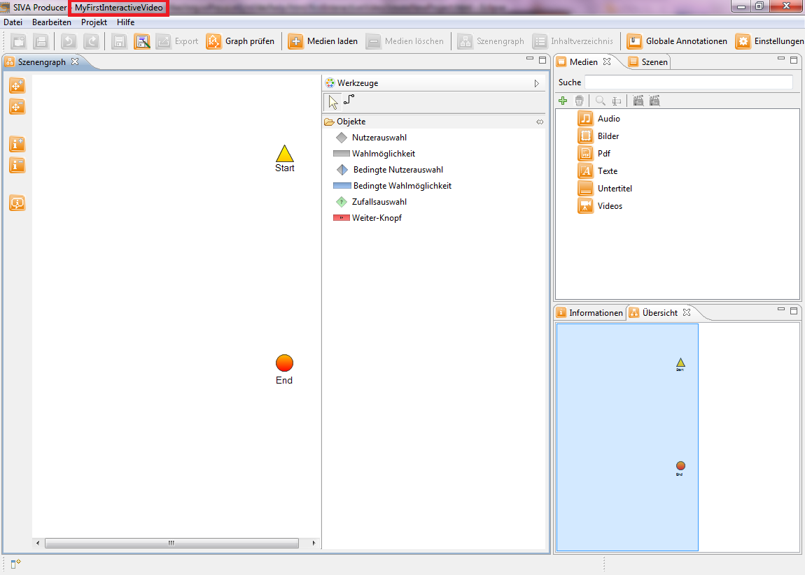

Für das Anlegen eines Videoprojektes klicken Sie den Button "Neues Projekt anlegen" in der Symbolleiste. Daraufhin öffnet sich das Fenster für das Anlegen eines neuen Projektes.
Zuallererst bedarf es der Auswahl eines Speicherortes, indem Sie auf den "Durchsuchen"-Button klicken und zum gewünschten Zielverzeichnis navigieren. Danach legen Sie einen Projektnamen fest und klicken anschließend auf den "Weiter"-Button, um in den nächsten Dialog, der Auswahl des Startmoduses, zu gelangen.

In diesem Dialogfenster können Sie das Design des Players bestimmen. Dazu stehen Ihnen einige Auswahlmöglichkeiten zur Verfügung. Beispielsweise können Sie auswählen, ob der Annotationsbereich sichtbar ist, wie groß die Seitenbereiche sein sollen oder wie die Playerfarben aussehen sollen. Durch Betätigen des "Finish"-Buttons erscheint ein Pop-up-Fenster, in dem Sie gefragt werden, ob ob Sie jetzt Mediendateien hinzufügen möchten. Bitte Klicken Sie in diesem Fenster auf den "Nein"-Button, da Ihnen in diesem Tutorial gezeigt wird, wie Sie Medien manuell hinzufügen.

Daraufhin schließt sich das Fenster und Sie haben erfolgreich das Projekt unter angegebenen Namen im angegebenen Zielverzeichnis angelegt. Der erste Schritt ist getan und Sie befinden sich nun im Projektdialog, der so aussehen soll.

Als nächstes wird Ihnen erklärt wie Sie in SIVA ein Medium laden. Klicken Sie bitte hierfür auf den nächsten Menüpunkt "Laden eines Mediums" im Hilfeverzeichnis auf der linken Seite oder auf nachstehenden Link. Laden eines Mediums